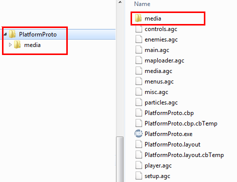
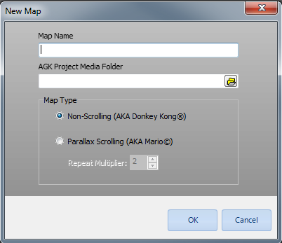
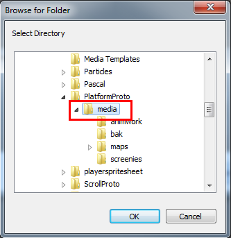
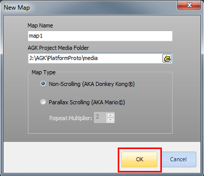
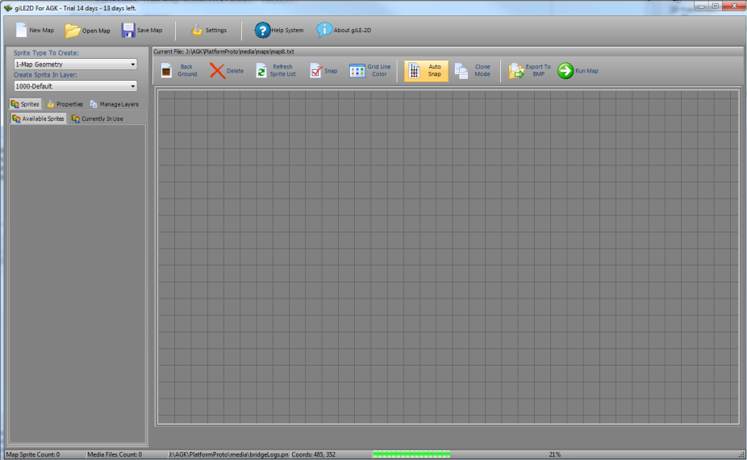
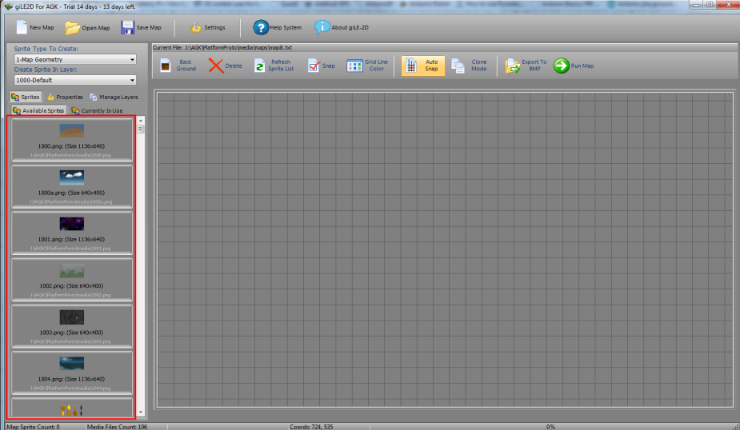

| Creating Your First Map |
|
First, a note on map creation and resolution... After extensive testing on various devices, I have found that a map resolution of 1136 x 640 (aspect ratio 1.775, 16:9) creates the best results. AGK uses a system called virtual resolution, which brilliantly adapts to each device (even on a Windows PC!). To read more, you can review the AGK command setVirtualResolution on AGK's website. This is why giLE2D only supports one resolution so far (don't worry... more are planned as a free upgrade to registered users!). Also, it is necessary for you to have previously created an AGK project, complete with its /media folder. gilE2D will look for this when you create your maps, since it needs to know what media to load for your project. An example of a typical AGK project file structure can be seen below: |
|  |
|
Right, lets dig in! OK, to create a new map, we must first click on the "New Map" button in giLE2D's main toolbar. When you do this, the following dialog will appear: |
|  |
|
You'll notice that the active field in the
dialog is the "Map Name" field. It is HIGHLY
RECOMMENDED that you name your maps thusly: map1 map2 map3 ... and so on... Later, when you come to write a parser or, maybe, even use my parsing example, you'll see that this will give you a nice natural order. Anyway, or as my TGC pals might say... "any road-up", in the "Map Name" field, type "map1" Now then, you'll notice that the "AGK Project Media Folder" field has a nice little navigation button with two folders at the end of it that you can click, instead of typing in the full path to your AGK projects media folder. Clicking this button gives you the following standard Windows choose folder dialog. |
|  |
| Use this dialog to navigate to your AGK projects media folder, select it, then click OK. You'll end up with the "New Map" dialog looking kinda like this: |
|  |
|
Now, if you noticed, there is also a group box
on this dialog, titled "Map Type". giLE2D
makes provision for non-scrolling and scrolling type games. If you
choose the non-scrolling option, giLE2D will create a
map with a resolution of 1136 x 640. However, if you choose the
scrolling option, you will be asked to supply a "Repeat Multiplier"
value. This tells giLE2D how many times to repeat the
backdrops of a map in the X-Plane (X-direction).
For example, our base resolution is 1136x640. So the maximum x value of the map is 1136 for a static, non-scrolling map before we hit the edge of the screen. However, for a scroller, we do not want to hit this limit, so the repeat multiplier tells giLE2D how much to extend the x-plane. So, if you were to choose a repeat value of 3, the map dimensions would be (1136*3)x640, or 3048x640. This extends the map beyond the screen and, using some code in AGK, allows the creation of a scrolling map. We have supplied basic framework AGK Basic code for a parallax scrolling game and we highly recommend you look at the code to see how it all works! For the time being, just select the non-scrolling option to get started. We will discuss scrollers later. |
|
Now you can click the OK button. Incidentally, there's nothing to stop you
typing in the path... if it doesn't exist then giLE2D will tell you, and
then you'll get frustrated. Honest. I don't care really! If typing stuff
is your M.O. then more power to ya! So, after you click OK, giLE2D will attempt to check the validity of the claims you made in the fields above. It will look to see that a real AGK project exists in the location you specified. If it can't validate that a real AGK project is there, it'll complain (and maybe cry some). No harm no foul, just fill in the correct stuff and giLE2D will create your new map project! Well then, the next thing you are likely to see is the following: |
|  |
| I took the above screenie while giLE2D was loading all the media it could find inside the media folder you chose from the "New Map" dialog. You'll see the progress bar whizz to 100%, and then ... you'll be ready to rock and roll... your creativity glands oozing mappy hormones that just can't be stopped by mere mortals... |
| Hell... when its done loading, you might even see this... |
|  |
| Oooooh!... Look....! The "Available Sprites" tab has been populated with all the stuff thats in my media folder...! ... not a surprise, really I guess, if there was stuff in there to begin with... |
|
Anyhoo, that takes care of telling you how to create a new map project!
Ummmm... not too exciting yet, but wait till we get into it... it'll be
fun! So, the next thing I should tell you about would be concerning the actual media and how it relates to your AGK project. If you want to read about that now, then go ahead and click here, else go back to the home screen! |